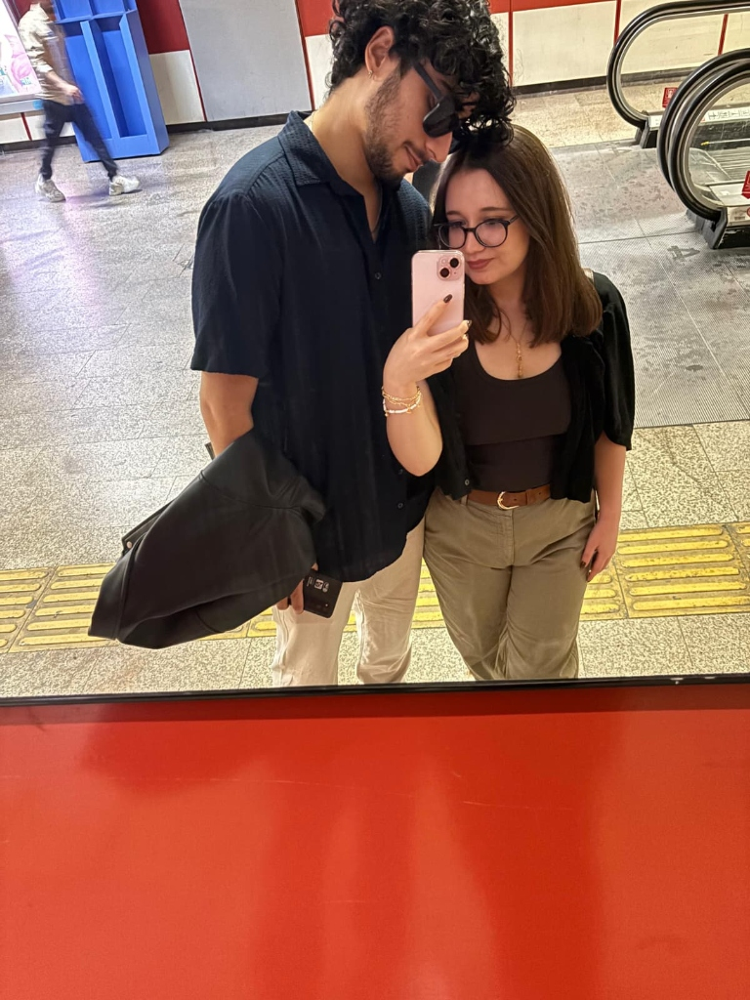
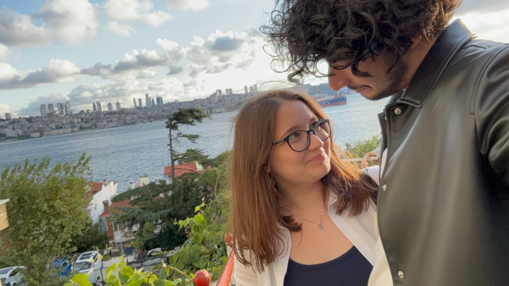
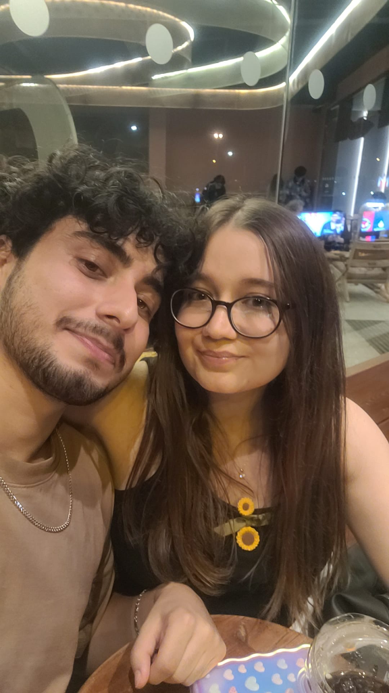
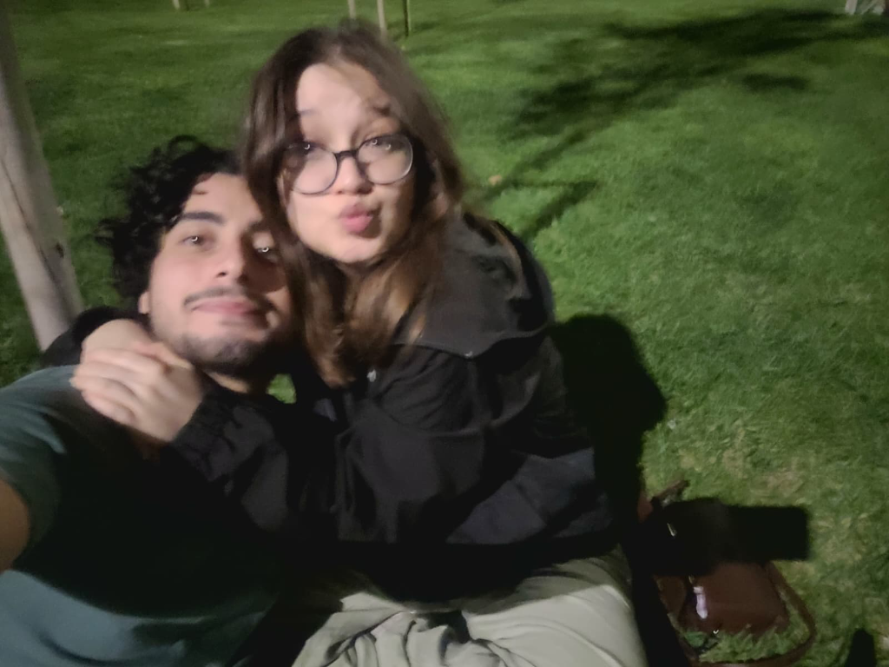
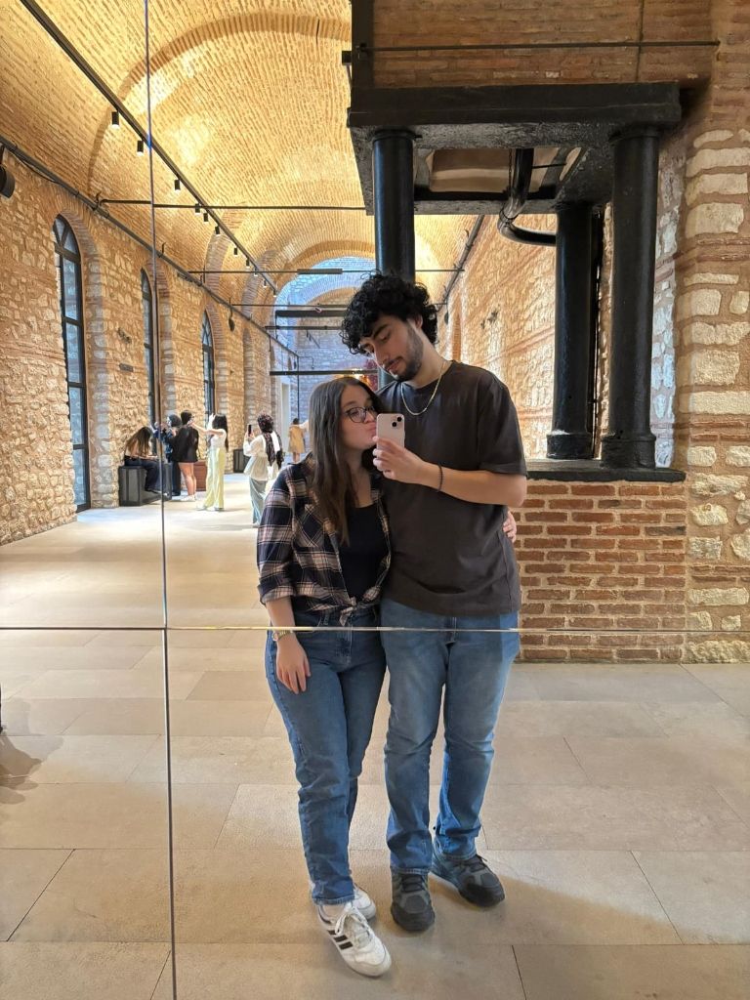

Zaman daralıyor sevgilim, senin için hazırladığım sürprize çok az kaldı.
Sana bir hediye geldi... Dokun ve aç! 🎁
Hikayemizin anahtarı... Kilidi açmak için üzerine tıkla! 🔑
31.05.2026
✨
Birlikte, her yere... 🚇
"Öyle uzaktan seviyorum seni / yanaklarına sızan iki damla yaşını / silmekten kaçınarak... Öyle temiz, öyle derin..."
Kalabalıklar içinde bile etrafımdaki her şeyi unutup sadece senin o güzel gözlerine bakmak, bana huzur veriyor sevgilim.

Denize karşı, el ele... 🌊
"Sen bana bakma, ben senin baktığın yönde olurum..."
İstanbul'un o güzel manzarasında, Boğaz'ın esintisinde sana sımsıkı sarıldığım her an, zaman dursun ve biz hep öyle kalalım istedim.

Gülüşünle açan çiçekler... 🌻
"Seninle olmanın en güzel yanı ne biliyor musun?
Seni her gün yeniden sevmek..."
Gözlerindeki o sevimli sıcaklık ve yüzündeki o tatlı gülüş, dünyadaki en güzel şey. İyi ki hayatımdasın papatyam.

Gecenin içinde parıldayan yıldızım... 🌟
"Seninle olmak güzel, seninle gülmek güzel... Birlikte geçen her saniye çok değerli."
Parkta yorulup dinlendiğimiz, sana sımsıkı sarıldığım o tatlı an... Seninle geçirdiğim her saniye bana mutluluk veriyor sevgilim.

En güzel günlerimizden biri... 💖
"Seninle yan yana yürümek, hayatın en güzel detayı."
Aynadaki yansımamıza baktığımda yanımda senin olduğunu görmek beni çok mutlu ediyor. İyi ki varsın sevgilim, doğum günün kutlu olsun.
Sayfaları çevirmek için aşağıdaki butonları kullanabilir ya da doğrudan kitabın üzerine tıklayabilirsin! 📖
Hayatımın en güzel hikayesi, kalbimin en özel köşesi...
Yeni yaşında tüm hayallerin senin gibi güzel, senin gibi parlak ve mutluluk dolu olsun sevgilim. Umarım bu yeni yaşın bize daha nice harika hatıralar, kocaman gülüşler ve tükenmez bir sevgi getirir.
Doğum günün kutlu olsun biriciğim, iyi ki varsın, iyi ki doğdun!
Seni Çok Seven,
Yiğit ❤️